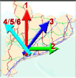

|
Puigllançada |
| Puigllançada (Berguedà) | Creu
de Sant Andreu a 2.409 m. 22 d'agost 2001 |
|
|
Des de Sant Andreu de Palomar, sortir per la Meridiana C-58 (antiga A-18) direcció Terrassa i continuar per la C-16 direcció Manresa -peatge- Berga, Guardiola de Berguedà i Bagà. O bé, a Terrassa, sortir de l'autopista i agafar la C-58 (antiga BP-1213) fins a la C-55 (antiga C-1411) cap a Manresa i la C-16 a Berga i Bagà, itinerari lliure de peatge. Bagà és una bonica població digne de visitar. Guarda una Creu Bizantina dels segles X-XI, que cal veure. Des
de Bagà, buscar la BV-4024 a Coll de Pal, seguint els indicadors
-magnífiques vistes d'alta muntanya- fins arribar a Coll de Pal. El cim del Puigllançada té un conjunt d'antenes que cal fer servir de referència (no confondre amb les antenes de la Tossa d'Alp al cim de l'esquerra del aparcament). Des de l'aparcament en 3/4 d'hora es puja sense dificultat, guiant-se per les antenes i seguint fins el cim. |
 |
Altres itineraris des de la C-16: Des
de Guardiola de Bergadà, a la dreta agafar la B-402 direcció
la Pobla de Lillet, pocs quilòmetres abans, desviació
a la dreta per anar al Santuari de la Mare de Déu de Falgars.
Interessant de veure. |
| . |
Puigllançada
|
S.G.L.
|
 |
Feu-nos arribar relats de viatges i fotografies
(jpg - 100 px inch)
podeu deixar còpies en paper a FotoGestió, Rambla de l'Onze de Setembre, 35
webstap@sant-andreu.com
Tornar